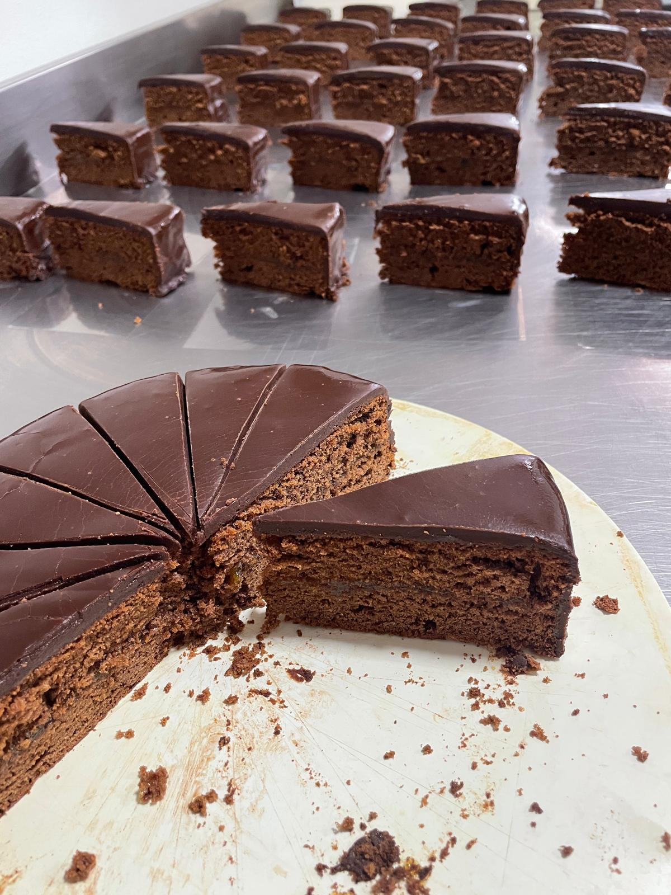
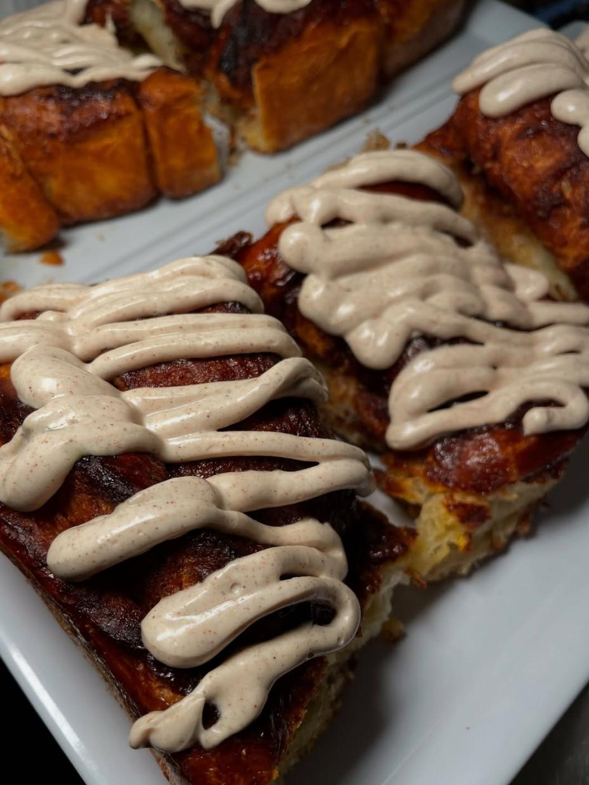
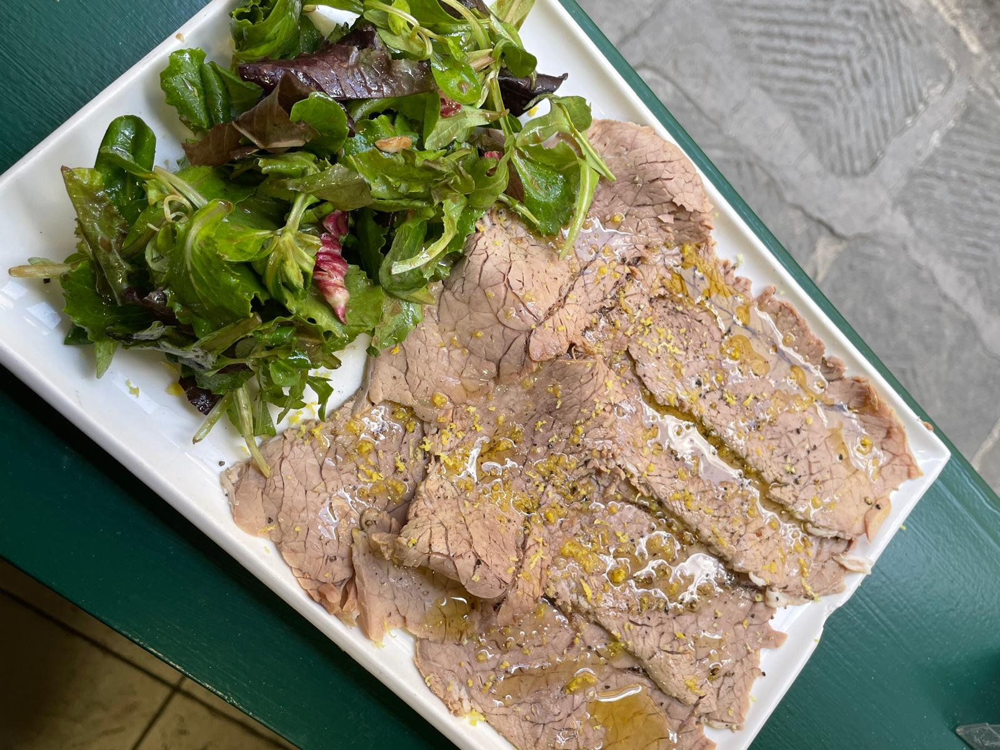
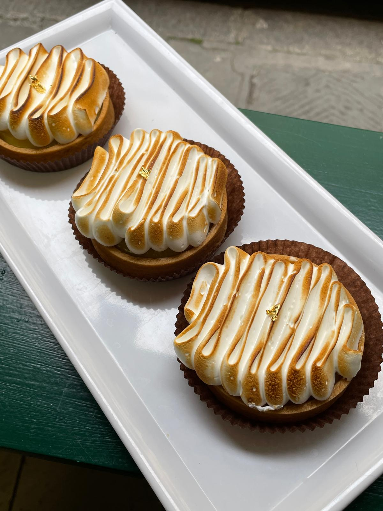
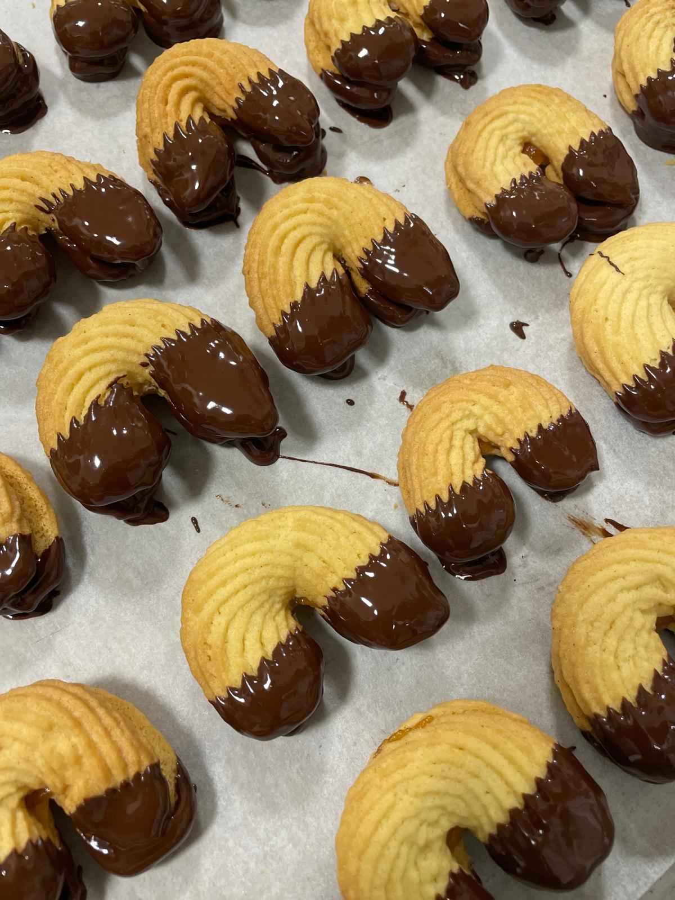

Caffè Rainer
Dalla prima colazione della mattina al pranzo bistrot, prepariamo ogni giorno specialità artigianali nel nostro laboratorio per regalarvi momenti speciali.
Indirizzo
Via San Zanobi 97/R, 50129 Firenze
Orari di Apertura
Martedì - Sabato: 8:00 - 18:00
Domenica: 8:00 - 15:00
Lunedì: Chiuso
Contatti
Tel: 055 493 2207
Email: info@cafferainer.it






